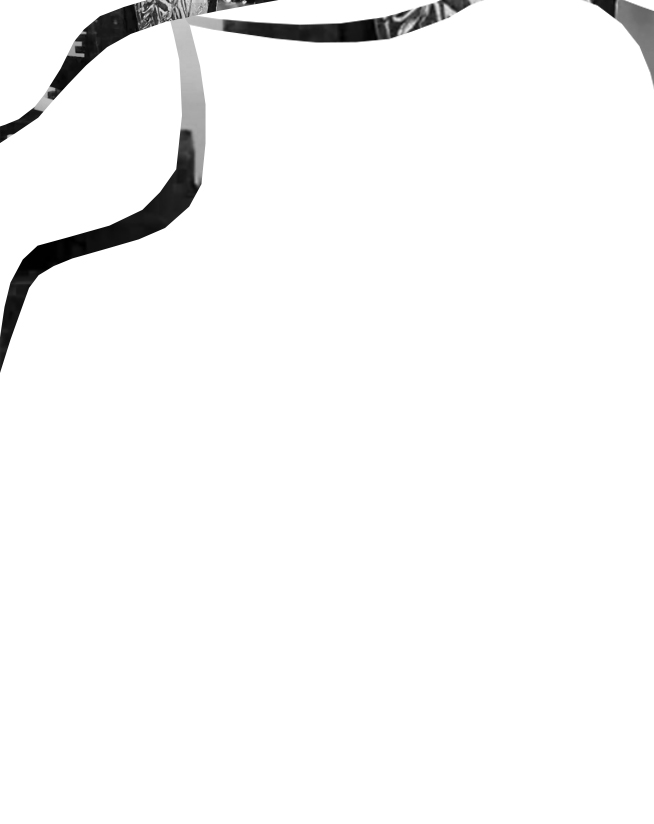

I think that woman gets out in the daytime!
And I'll tell you why - privately I've seen her! I can see her out of everyone of my windows! It is the same woman, I know, for she is always creeping, and
most women do not creep by daylight. I see her in that long shaded lane, creeping up and down.
I see her in those dark grape arbors, creeping all around the garden. I see her on that long road under the trees, creeping along,
and when a carriage comes she hides under the blackberry vines. I don't blame her a bit. It must be very humiliating to be caught
creeping by daylight !
I always lock the door when I creep by daylight. I can't do it at night, for I know John would suspect something
at once. And
John is so queer now, that I don't want to irritate him. I wish he would take another room!
Besides, I don't want anybody to get that woman out at night but myself. I often wonder if I could see her out of all the windows at once. But, turn as fast as I
can, I can only see out of one at one time. And though I always see her, she may be able to creep faster than I can turn !
I have
watched her sometimes away off in the open country, creeping as fast as a cloud shadow in a high wind.